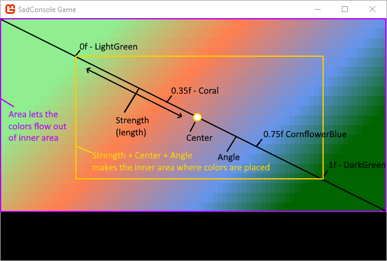
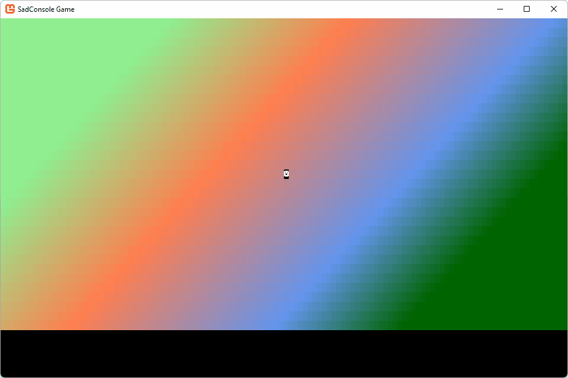

Get Started 3 - Input
In this part of the tutorial we'll explore how input works in SadConsole. You'll learn how to create a basic map with a player that you can use the mouse and keyboard to interact with.
Input is made up of both keyboard and mouse processing. SadConsole does not provide any input processing for gamepads and joysticks. However, MonoGame provides gamepad and joystick processing, which SadConsole is built on.
Previous articles in this tutorial:
Prerequisites
To start this tutorial you'll need to have created a SadConsole project, one that was created by int the previous tutorial in this series. However, you may have been experimenting with your code, trying new things out. To make sure that you start this tutorial with the same code, copy and paste the following code into your program.cs:
using System;
using SadConsole;
using SadRogue.Primitives;
using Console = SadConsole.Console;
namespace SadConsoleGame
{
public static class Program
{
static void Main()
{
// Setup the engine and create the main window.
Game.Create(120, 38);
// Hook the start event so we can add consoles to the system.
Game.Instance.OnStart = Init;
// Start the game.
Game.Instance.Run();
Game.Instance.Dispose();
}
static void Init()
{
}
}
}
There is one change in the preceding code from the previous parts of the tutorial: the screen size is bigger at 120 x 38. This gives you a window roughly 33% bigger than before.
Game structure
First, let's create a new root object. This object will represent game scene which includes the map and a status pane. The player character will move around the map. Add a new class to your project (look up how to do that in your development environment tool's documentation if you don't know how) named RootScreen.cs. Replace the content with the following:
using SadConsole;
using SadConsole.Input;
using SadRogue.Primitives;
using System.Collections.Generic;
namespace SadConsoleGame
{
public class RootScreen: ScreenObject
{
public RootScreen()
{
}
}
}
Next, use this class in the program.cs as the object processed by SadConsole in the Init method:
private static void Init()
{
Game.Instance.Screen = new RootScreen();
Game.Instance.Screen.IsFocused = true;
// This is needed because we replaced the initial screen object with our own.
Game.Instance.DestroyDefaultStartingConsole();
}
Notice that the RootScreen object is derived from ScreenObject, not Console. The ScreenObject is the base type of everything you can set as the "current screen," the Game.Instance.Screen property. This property is processed by SadConsole every game frame. Even though ScreenObject doesn't have anything to render to the screen, it's still processed and acts like a logical, invisible, container. The object has no width or height, so the mouse can't really be used to detect entering or leaving, or even movement within the object. The ScreenObject is useful as a container to group objects together and for processing. We'll use this one as the root scene that will show the map and other screen elements.
Create a basic map
Back in the RootScreen.cs file, add a new field to the class to represent the map:
public class RootScreen: ScreenObject
{
private ScreenSurface _map;
public RootScreen()
{
}
}
And in the constructor of RootScreen, create the map:
public class RootScreen: ScreenObject
{
private ScreenSurface _map;
public RootScreen()
{
_map = new ScreenSurface(Game.Instance.ScreenCellsX, Game.Instance.ScreenCellsY - 5);
_map.UseMouse = false;
Children.Add(_map);
}
}
Notice two things about the _map variable:
It's a
ScreenSurfaceand not aConsole.The map isn't going to use a cursor object to print and collect input from the user, so we don't need a full console object. The majority of the time when you create objects in SadConsole that don't need a cursor, you'll probably just use a
ScreenSurface.The width and height of the object is set to the
Game.Instance.ScreenCellsXandGame.Instance.ScreenCellsYvariables, respectively.ScreenCellsX/Yrepresent how many cells in the default font size the SadConsole game can fit on the screen. These are from the width and height values passed to theGame.Createmethod at the start of the game. This makes it easy to create a surface that fills the window. For theYheight though, we're trimming off 5 from the bottom. This leaves some space at the bottom of the screen to add a status console later.
Next, lets add some background to the map. Instead of using the FillWithRandomGarbage method that we previously used, we'll draw a gradient. The background doesn't really represent anything, but it will make it easier to see our objects and demonstrate some key concepts.
Add the following method to the class:
private void FillBackground()
{
Color[] colors = new[] { Color.LightGreen, Color.Coral, Color.CornflowerBlue, Color.DarkGreen };
float[] colorStops = new[] { 0f, 0.35f, 0.75f, 1f };
Algorithms.GradientFill(_map.FontSize,
_map.Surface.Area.Center,
_map.Surface.Width / 3,
45,
_map.Surface.Area,
new Gradient(colors, colorStops),
(x, y, color) => _map.Surface[x, y].Background = color);
}
Call the FillBackground method from the RootScreen constructor:
public RootScreen()
{
_map = new ScreenSurface(Game.Instance.ScreenCellsX, Game.Instance.ScreenCellsY - 5);
_map.UseMouse = false;
FillBackground();
Children.Add(_map);
}
The way the gradient algorithm works is by calculating each X,Y of an area, and providing a color that maps to it. What you do with that information is up to you. In this example we colored the background of each cell based on what the algorithm gave us. The amount of colors in the gradient and the amount of steps must match for the gradient to work. The following diagram may help understand how this is put together, but it's not really important at this point:
The FontSize used helps stretch the gradient evenly over the surface. The default font used by SadConsole has a 2:1 ratio in width to height. The following image illustrates how the gradient is laid out, it uses a smaller window for the purpose of the illustration:

Now that there is a background that we can place objects on, let's create and place a player object.
Game object
The game will have a player-controlled object, along with other non-player characters (NPC) on the map. Create a new type named GameObject. Add a new class file to your project named GameObject.cs and paste the following code:
using SadConsole;
using SadRogue.Primitives;
namespace SadConsoleGame
{
public class GameObject
{
public Point Position { get; private set; }
public ColoredGlyph Appearance { get; set; }
public GameObject(ColoredGlyph appearance, Point position, IScreenSurface hostingSurface)
{
Appearance = appearance;
Position = position;
DrawGameObject(hostingSurface);
}
private void DrawGameObject(IScreenSurface screenSurface)
{
Appearance.CopyAppearanceTo(screenSurface.Surface[Position]);
screenSurface.IsDirty = true;
}
}
}
Let's dive into this code. First, the class has two properties:
PositionThis is a
Pointtype from theSadRogue.Primitivesnamespace. It represents a location, and in this case, the position of our game object on the map.AppearanceThe appearance of the game object is a
ColoredGlyph, which represents a foreground color, background color, and glyph character combination. When the object is drawn to the map, this is what it looks like.
The constructor of the object requires the appearance and position of the object, but also a surface. Why would you provide the surface? To draw the object! When the object is created, we're instantly drawing it to the surface by calling the DrawGameObject method from the constructor. DrawGameObject uses the Appearance.CopyAppearanceTo method to draw the object. This method copies all of the settings in the appearance to a specific cell on the surface. Lastly, after copying the appearance of the object, the surface is marked as dirty so that it will redraw itself.
Most of the time when you draw on a surface using methods like SetGlyph, SetForeground or Print, those methods mark the surface as dirty for you. In the case of the preceding code, we're editing a cell of the surface directly by using the CopyAppearanceTo method, which doesn't automatically mark the surface as dirty.
Code to move the object
Add another method to the GameObject class named Move. This method will handle repositioning the object and then drawing it on the surface.
public void Move(Point newPosition, IScreenSurface screenSurface)
{
Position = newPosition;
DrawGameObject(screenSurface);
}
Player game object
Now that the GameObject type has been created, it can be used to represent the player. In the RootScreen.cs file, add a new field to the class to represent the controlled player object:
public class RootScreen: ScreenObject
{
private ScreenSurface _map;
private GameObject _controlledObject;
// ... other code ...
In the RootScreen constructor, create the object to represent the player: a face glyph.
public RootScreen()
{
_map = new ScreenSurface(Game.Instance.ScreenCellsX, Game.Instance.ScreenCellsY - 5);
_map.UseMouse = false;
FillBackground();
Children.Add(_map);
_controlledObject = new GameObject(new ColoredGlyph(Color.White, Color.Black, 2), _map.Surface.Area.Center, _map);
}
This creates a black and white glyph 2, the smiley face glyph. It's placed at the center of the map surface. run your project and you'll see the smiley face!

Now that you have a player on the screen, you'll need to get the keyboard working.
Keyboard
The previous tutorial article had you working with the Cursor object. The console was focused and the cursor accepted input and typed on the screen. While the cursor is great for getting input from the user to typing things on to the screen, it's generally not used for normal game interaction. One of the most common things people will do with the keyboard is hook it up so that it moves a character around on the screen.
Open the RootScreen.cs file.
SadConsole sends keyboard input to the object that is focused. For our scene to process the keyboard, we'll want to do two things:
Focus the object.
The
RootScreenobject was already focused earlier in this article, in theInitmethod. If you want to change which object directly receives keyboard input, focus it. Things like popup windows will focus themselves for keyboard input, and then when hidden, restore focus to the previously focused object.Override the
ProcessKeyboardmethod in theRootScreenclass:public override bool ProcessKeyboard(Keyboard keyboard) { return base.ProcessKeyboard(keyboard); }This method is called every game frame when the object is focused. The
base.ProcessKeyboardcall allows the screen object to do its normal keyboard processing, which is processing any keyboard-based components added to the object. You'll learn more about components later.
Next, we'll update the keyboard code to move our player-controlled object around. Remember, the player object has a Position property. We simply have to check if a direction key is pressed, and then change the Position property to move the object.
The keyboard parameter passed to the ProcessKeyboard method contains the current state of the keyboard, and any changes to it from the previous game frame. This parameter is used to test if a key is pressed, a key's state (up or down), or if a key was just released.
Change the ProcessKeyboard method to the following code:
public override bool ProcessKeyboard(Keyboard keyboard)
{
bool handled = false;
if (keyboard.IsKeyPressed(Keys.Up))
{
_controlledObject.Move(_controlledObject.Position + Direction.Up, _map);
handled = true;
}
else if (keyboard.IsKeyPressed(Keys.Down))
{
_controlledObject.Move(_controlledObject.Position + Direction.Down, _map);
handled = true;
}
return handled;
}
Let's look at this code:
The
handledis used to indicate that we did in fact process the keyboard, and this value is returned at the end of the method. This value is important when you want to prevent other objects from processing the keyboard after you did.Both the
Keys.UpandKeys.Downvalues are checked with thekeyboard.IsKeyPressedmethod. These share the same set ofifstatements to make it so that you can't push both Up and Down at the same time.
More movement
Next, add pretty much the same code to the ProcessKeyboard method, right after the checks for up and down. This code will handle left and right movement:
if (keyboard.IsKeyPressed(Keys.Left))
{
_controlledObject.Move(_controlledObject.Position + Direction.Left, _map);
handled = true;
}
else if (keyboard.IsKeyPressed(Keys.Right))
{
_controlledObject.Move(_controlledObject.Position + Direction.Right, _map);
handled = true;
}
Now run the game and try moving the character around the screen:
Notice that you can move the character around the map, but the character is leaving a trail behind it. This is because when the character moves we copy the appearance of the character to the new position on the surface directly, which changes what is on the surface. We don't restore what used to be on the surface.
Cleaner movement on the map
There are a few different ways of solving the problem of leaving a trail behind the player, but for this part of the tutorial we'll fix it in a simple way. When a game object is moved to a position on the map, store that cell appearance in the game object. When the game object is moved to another position, restore the cell appearance.
For this code you're going to edit the GameObject.cs file.
First, add a private variable named _mapAppearance to the class, below the existing properties. This variable will store the map's cell appearance before our character moves to that cell.
private ColoredGlyph _mapAppearance = new ColoredGlyph();
In the constructor, the game object is initially placed on the map. Copy the cell of the map before drawing the object:
public GameObject(ColoredGlyph appearance, Point position, IScreenSurface hostingSurface)
{
Appearance = appearance;
Position = position;
// Store the map cell
hostingSurface.Surface[position].CopyAppearanceTo(_mapAppearance);
// draw the object
DrawGameObject(hostingSurface);
}
Modify the Move method to restore the old cell and store the new position cell of the map:
public void Move(Point newPosition, IScreenSurface screenSurface)
{
// Restore the old cell
_mapAppearance.CopyAppearanceTo(screenSurface.Surface[Position]);
// Store the map cell of the new position
screenSurface.Surface[newPosition].CopyAppearanceTo(_mapAppearance);
Position = newPosition;
DrawGameObject(screenSurface);
}
Run the game and now you'll see that there is no trail left behind the player:

Conclusion
Now you understand a bit more about how input works, and you have a basic map and game object. These are just the basics, there is a lot more you can do with input, but that will be explored when we get into the user interface controls provided by SadConsole. The next part of the tutorial series will explore creating more map objects and displaying feedback to the user.